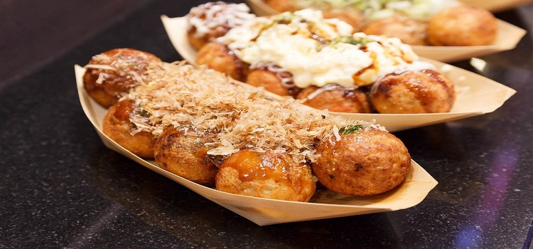
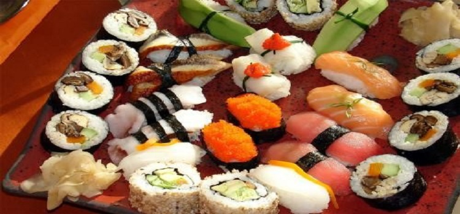

当地美食
#章鱼烧#
章鱼烧又名为章鱼小丸子，章鱼小丸子起源于日本大阪，原名“章鱼烧”，其历史要追溯到大正年代，创始人是日本著名美食家——远藤留吉先生，素有皮酥肉嫩、味美价廉之特点，成为日本家喻户晓的国粹小吃。
在大阪是用牙签叉来吃，而东京是用筷子夹，在早期则是用竹串以三个一串的方式处理的。章鱼烧特点：章鱼茸鲜、色白、红、黑相同，海苔味香，外观整齐美观。口味咸而鲜。章鱼小丸子早随后在东南亚各地区流行起来，成为各地区的新兴食品之一．章鱼小丸子的成份主要是章鱼，章鱼烧粉，柴鱼片，海苔等。

图：章鱼烧
#寿司#
寿司，一种日本料理，主要材料是用醋调味过的饭（简称醋饭），再加上鱼肉、海鲜、蔬菜、鸡蛋或其他肉类等作配料。寿司既可以作为小吃也可以作正餐，花色种类繁多。配料可以是生的、也可以是熟的，又或者是腌过的。视乎配料的不同，不同寿司的价格、档次差距甚大。

图：寿司
#刺身#
一种常见的日本料理，其做法是以新鲜的鱼贝类生切成片，蘸酱油、山葵、味噌等调味料食用。刺身一般都是用新鲜海鱼、海贝制作，是日本料理中最为清淡的菜式，所以在餐中通常为最早的一道菜。

图：刺身
#天妇罗#
炸好的天妇罗在吃之前可以撒上些海盐，或是沾混合酱油，高汤等的调味料。天妇罗一般会再配上磨碎的萝卜泥，而且在炸好时要趁热吃。天妇罗可以和其他菜配合，作成便当，也可以和荞麦面条一起作早餐。
图：天妇罗
#鳗鱼饭#
鳗鱼饭，一种典型的高档日本料理，主要是将蒲烧鳗鱼置于米饭上食用。在日本分为鳗鱼盒饭（鳗重）与鳗鱼碗饭（鳗丼），区别仅为一种用木盒盛放而另一种用瓷碗。食用前可撒上花椒粉提香。
图：鳗鱼饭
#传统烧烤肉#
日本传统烧烤肉类，与韩国烧烤有点相似，通常会使用炭火将肉类（通常包括和牛牛肉、牛舌、五花肉等）烤熟。日式烧肉也会使用到以日式酱油调制而成的酱汁。
图：烤肉
#铁板烧#
铁板烧是日本料理中较为昂贵的一种料理方式，铁板烧通常以上乘的材料，由富经验的厨师在食客面前即时烹制。除了味觉满足外，欣赏厨师的烹制食物过程也是一种特别的体验。
图：铁板烧
#蘸面#
将面和浓汤分开有别于传统面食的吃法，面–可根据你自己的喜好选择冷面或热面；而浓汤–则选用优质猪脊骨、鸡、干鱼等10多种材料，熬炖长达10几小时，最后将面沾着浓汤享用，当然还配以海苔、鸡蛋、叉烧等多种配料可供大家享用。
图：蘸面
#生鱼片#
以新鲜的鱼贝类生切成片，蘸调味料食用的食物总称。在中国、日本、朝鲜半岛甚至欧洲等地都有类似的吃法，可说是相当国际化的一种料理。吃生鱼片有低机率感染广节裂头绦虫，所以生鱼片一定要经过低温冷冻或其他杀菌处理。
图：生鱼片
#拉面#
日本拉面自中国引进之后，由于日本地形的关系呈现自己个别地区不同的发展特色，面条不再拉而是切成的，有酱油拉面、豚骨拉面、海鲜拉面、味噌拉面等。
图：拉面
觅食好去处
#一兰拉面（新宿中央东口店）#
Ichiran起源于九州，是博多拉面的一种，也是当地豚骨拉面的代表，蔡澜强力推荐的一家拉面店，在店里可以经常撞见明星哦。这里拥有“一个人也可以吃拉面”和“专心吃面”的拉面文化，与众不同的小隔间设计，你在帘子这头吃面，厨师在另一头制作拉面，私密性很好，单身人士就餐的福地。
这里备有各种语言的菜单，上面分类详细到拉面的份量、软硬程度、汤底浓度等等，十分贴心。每个人的桌子上有杯子，可以自助接水。这里的拉面汤头浓郁，面身筋道，吃完拉面一定要大口喝掉汤，碗底会有惊喜。
地址：日本东京都新宿区新宿 3-34-11
图：一兰拉面
#思出横丁#
新宿西口的Palette大厦旁，穿过新宿大高架桥的西口侧，眼前出现一条林立着长屋建筑联排的酒馆街。在这里既有残留着1940年代混沌风貌的街景，又弥漫着温暖人情味，这里就是“新宿西口回忆横丁”!
地址：日本东京新宿区西新宿1丁目
图：思出横丁
#鳗割烹 伊豆荣（本店）Izuei#
位于上野公园不忍池对面的已有260多年历史的鳗鱼老字号店铺。店堂装修考究，处处透漏着用心的痕迹。 他们家的鳗鱼有两种做法，蒲烧和白烧，蒲烧就是边烧鳗鱼边抹点特制酱汁，白烧则是放一点点盐，不涂酱汁，烧出来的比较原味清淡。
图：鳗割烹 伊豆荣
#惠比寿横丁#
写字楼林立，午餐胜地，OL的人气街道，这就是惠比寿横丁。挂满红灯笼的窄窄入口就在时尚的惠比寿街区，一到夜晚，特别光亮的“惠比寿横丁”招牌格外引人注目。
地址：日本东京都涩谷区惠比寿1-7-4
图：惠比寿横丁
#口琴横丁#
与路上行人接踵摩肩、穿梭过彷佛就要迷路似的狭窄街道后，看似充满欢乐的店铺就伫立在您的眼前，似乎所到之处都能听到音乐传来。口琴横丁街内不仅有饮食店，还有杂货店、沙龙、占卦等，逛一整天也不会觉得厌烦。
地址：日本东京都武蔵野市吉祥寺本町1丁目~2丁目
图：口琴横丁
#黑塀横丁#
东京车站地下一番街的“黒塀横丁”是一条很有日本特色的地下食品街。总体规模不大，总共只有12家小店，可在那里你可以享尽日本风味的小吃。也许你不习惯吃日本料理也不要紧，那里还有一家韩国料理和一家中国料理。
地址：日本东京都千代田区丸之内1-9-1东京站八重洲北口B1
图：黑塀横丁
米其林星级餐厅
#数寄屋桥次郎总店#
数寄屋桥次郎（すきやばし次郎）总店应该是东京知名度最高的一家米其林餐厅了，这里正是著名的“寿司之神”小野二郎的大本营。现年88岁的小野二郎是现在世界上最年长的3星大厨，尽管餐厅座位只有十席，每年仍有数以万计的饕客慕名而来，订位需要提前一个月。
在数寄屋桥次郎总店的寿司中，小野二郎个人最推崇鲔鱼寿司，认为该食材最能体现寿司精髓——不同的鱼身部位脂肪含量各不相同，搭配精确控制温度的米饭，能带来非凡的味觉体验。
人均消费：32000日元
地址：日本东京都中央区銀座4-2-15 塚本ビルB1F
图：数寄屋桥次郎总店
#龙吟（Nihonryori RyuGin）#
龙吟餐厅曾在2012年被世界权威美食评论机构 The S.Pellegrino World’s 50 Best Restaurants 评为全球最佳餐厅第28位。
餐厅对于食客有颇多要求：建议食客不要涂抹味重的香水，以免影响料理味觉；龙吟还谢绝10岁以下儿童，以及身着T恤短裤和凉鞋的男性食客进入餐厅用餐，食客在用餐时不允许使用手机。
料理方面，龙吟在传统日式料理中加入了许多新鲜元素，如分子料理等。主厨山本征治经常飞到欧洲与当地名厨交流，将前卫元素融入自己的料理中。
人均消费：23000日元
地址：日本东京都港区六本木7-17-24 サイド六本木ビル1F
图：龙吟餐厅美食
#神乐坂石川#
这是一家日本怀石料理的传统名店，餐厅介绍中写道“日本岁月，食材精粹，时间酝酿，柔软往事，融为一场美妙的味觉体验”。这里的蟹料理尤为美味，松叶蟹是一绝。
人均消费：25000日元
地址：日本东京都新宿区神楽坂5-37 高村ビル 1F
图：神乐坂石川美食
#臼杵河豚山田屋#
这是日本米其林餐厅中少有的以河豚料理闻名的餐厅，用来制作河豚料理的食材全部取自野生虎豚，口感肉质十足。
山田屋在处理河豚料理时，会先将河豚切成非常透明的菊瓣形极薄切片，再放入盘中由外向内叠层排成菊花的形状，食客用筷子由外层向内层一层一层地剥着吃。由于野生河豚的捕获量逐年减少，目前正处于供不应求的状况，所以经常需要提前数月定位。
人均消费：21000日元
地址：日本东京都港区西麻布4-11-14 FLEG 西麻布VIERGE 地阶A
图：臼杵河豚山田屋美食
#青山Esaki#
青山Esaki（えさき）的店面位于神宫前的一条小巷中，但酒香不怕巷子深，每晚所有16个座位和两个包间都座无虚席。这里的招牌是有机野菜，提供来自日本各地的日常蔬菜，突出了日本料理在处理食物上的精细。
人均消费：10500日元
地址：日本东京都涉谷区神宫前3-39-9 ヒルズ青山B1F
图：青山Esaki美食
#Quintessence#
从2007年起连续7年被评为“米其林三星”的神级法国料理，客人至少要提前两个月才能预订到。
人均消费：18900日元
地址：日本东京都品川区北品川6-7-29 ガーデンシティ品川御殿山 1F
图：Quintessence美食
#麻布幸村#
店主兼主厨幸村最为人所知的是“间人蟹”，主要用松叶蟹和长脚蟹料理，被誉为“一辈子一定要吃一次”的蟹料理。
人均消费：25000日元
地址：日本东京都港区十番街1-5-5汤建麻布十番大厦3层
图：麻布幸村
#Joel Robuchon#
可谓是日本最为华丽的餐厅——Joel Robuchon总店设在巴黎，唯一一家分店便设在日本。老板斥巨资买下了东京一座法式城堡，将内部布置得富丽堂皇。食材从全球空运而来，整个法式晚餐共12道，很多菜品中会配上黑松露。
人均消费：36000日元
地址：日本东京都目黑区三田1-13-1惠比寿gardenplace2F
图：Joel Robuchon
#水谷寿司#
水谷寿司（鮨水谷 よしたけ）在时令选材方面尤为讲究，主厨水谷先生在圈中是出了名的独具慧眼，也有着自己的特别进货渠道，能让客人尝到最新鲜的美食。
人均消费：23000日元
地址：日本东京都中央区銀座8-7-19 すずりゅうビル3F
图：水谷寿司
#虎白#
今年唯一新晋的三星餐厅，由名厨石川秀树的得意弟子小泉功二掌厨，不仅限于日本菜，还会用来自世界各国的食材创作创意料理，特别是日式生鸡蛋盖饭和西洋黑松露结合的逸品。
人均消费：15000日元
地址：日本东京都新宿区神楽坂3-4